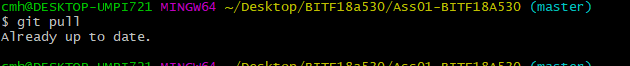
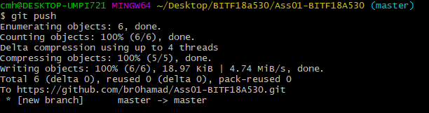

A version control system is a kind of software that helps the developer team to efficiently communicate and manage(track) all the changes that have been made to the source code along with the information like who made and what change has been made.
Git is a free and open source distributed version control system designed to handle everything from small to very large projects with speed and efficiency.
Clone repository
Version control system have some pretty basic commands to update our repository.
The git status command displays the state of the working directory and the staging area. It lets you see which changes have been staged, which haven't, and which files aren't being tracked by Git. Status output does not show you any information regarding the committed project history.
git add [filename] selects that file, and moves it to the staging area, marking it for inclusion in the next commit. You can select all files, a directory, specific files, or even specific parts of a file for staging and commit.
"commit" command is used to save your changes to the local repository. You can also write message about the changes when you are commitinh
It give us information about the branches.
We can also create Branches using this command hence we can do prallel work in our repository.
The git checkout command is used to switch between branches in a repository.The * sign represnt the branch we are currently in .
Use git pull to update a local repository from the corresponding remote repository.
git push command is used to upload local repository content to a remote repository.
By this command we merge the two files in one and we have the option to keep the changes or discard or keep the both files in one.